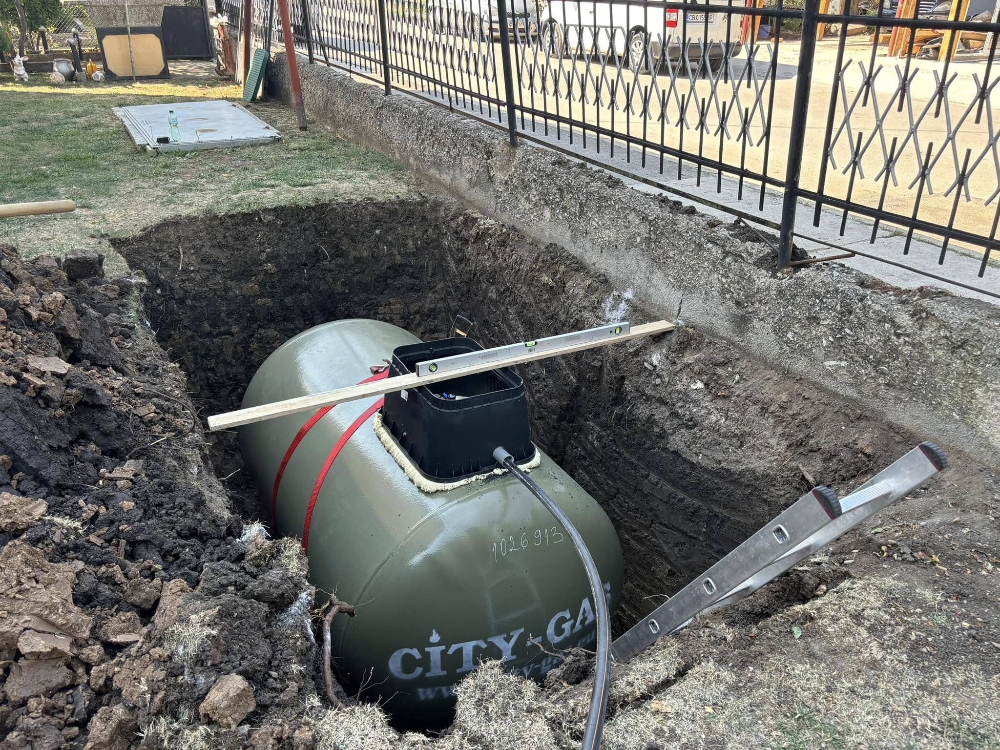
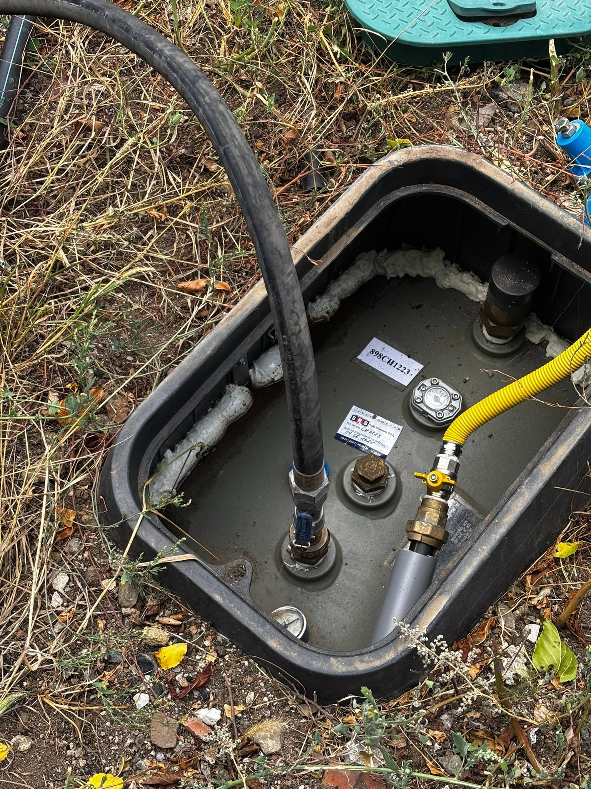

Какво включва доставка и монтаж на резервоар
Базата ни е в Костинброд. Работим в София и София област — от оглед и оферта до монтаж и настройка.
Подбираме обема според консумацията и мястото. Доставяме 1750 л и 2700 л, организираме разтоварването и подготовката за подземен монтаж. Често продължаваме с газови трасета и котел.
Подземният резервоар за пропан-бутан е решение, когато няма градски газ или искате автономно захранване.
Организираме доставка, разтоварване, подземен монтаж и връзка към регулаторната група. Често продължаваме с газови трасета и котел.
- Резервоари 1750 л и 2700 л за подземен монтаж
- Доставка и разтоварване на обекта
- Монтаж и връзка към регулаторна група
- Координация с котли и газови трасета
Как се оферира резервоар пропан-бутан
Цената зависи от обема (1750 или 2700 л), достъпа за разтоварване и изкопните работи. Конкретна сума даваме след оглед на мястото — без „пакет на сляпо“.
Какво не е включено / уточняваме честно: Не обещаваме срок, преди да видим достъпа за техниката. Извозването на земна маса се уточнява отделно, ако е нужно.
От реален обект
Къде поставяме резервоари
Резервоари за пропан-бутан доставяме и монтираме в София област и в София — там, където дворът и теренът позволяват безопасен подземен монтаж.
Подробности по населени места ↓
Логистика, изкоп и връзка
Оглед
Място, достъп за техника и нужен обем.
Доставка
Резервоарът пристига на обекта с организирано разтоварване.
Монтаж
Подземен монтаж и връзки към системата.
Готовност
Проверки преди експлоатация.
Резервоари на терен


Въпроси за пропан-бутан
Какъв е ценовият ориентир за резервоар пропан-бутан?
Цената зависи от обема (1750 или 2700 л), достъпа за разтоварване и изкопните работи. Конкретна сума даваме след оглед на мястото — без „пакет на сляпо“.
Какъв резервоар ми трябва?
Зависи от консумацията и пространството в двора. След оглед предлагаме подходящ обем — 1750 или 2700 л.
Правите ли подземен монтаж?
Да — подземни резервоари за пропан-бутан с връзка към регулаторната група.
Обслужвате ли Сливница и Драгоман?
Да — и Костинброд, Годеч, Божурище, Своге, Елин Пелин, Банкя, Нови Искър и София, където дворът позволява.